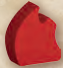
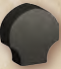
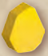
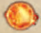
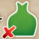

Setup
- Put the 8 magic items, tray of essences, and 5x essence chips in the center to form the supply.
- Next to them, set out the 5 Places of Power. Later games: for each Place of Power, randomly select which side to use. (For First Game setup, see
## First Game Setup.) - Shuffle the monuments. Set out 2 of them face up and form a draw pile with the rest.
- Give 1 of each essence (including Gold) to each player, to form their initial essence pools.
- Select a First Player, who takes the First Player token.
- Shuffle the mages and artifacts separately. Deal 2 mages and 8 artifacts to each player. Return the others to the box. Each player examines their cards. (For First Game setup, see
## First Game Setup.
After examining their cards, each player shuffles their artifacts to form their deck, offering it to an opponent to cut, and then draws 3 artifacts as their initial hand.
Each player then selects 1 Mage. Reveal them. Return unused mages to the box.
- In counter-clockwise (reverse) order, starting with the player to the right of the First Player, each player chooses 1 magic item. Begin play with the First Player.
First Game (for step 2): use their preset sides.
First Game (for step 6): instead, give each player a preset 3-card hand, labeled 1 / 2 / 3 / 4 in their lower right corners, and the matching mage. Deal 5 artifacts face down (unseen) to form each player's deck.
Setup TipsTip: Do you have dragons, creatures, or ways to make gold? This may suggest Places of Power that will work well for you or if you can buy several monuments.
Components
Mages and items are chosen during setup and begin in play. Each round, when a player passes, they will turn in their item for a new one.
Each player has a personal deck of 8 artifacts, 3 of which form their initial hand. Artifacts are put into play by paying their placement cost in essences. Some artifacts are also Dragons or Creatures. A few artifacts are worth points.
Monuments and Places of Power are claimed from the center by paying their placement cost in essences. Once claimed, a monument or Place of Power cannot be taken by another player. Monuments and Places of Power provide the majority of players’ points.
Essences and Essence PoolsEssences are Calm, Death, Elan, Gold, or Life. Your Essence Pool consists of the essences you have, not on components, that you can spend to pay costs.
The essences supplied are not a limit. As needed, put an essence on a "5x" essence chip to be 5 essences of that color. You may make change at any time.
Abilities and Powers (Overview)Components with Collect abilities provide essences at the start of each round.
Many components have 1 or more powers. Powers have both a cost and an effect. Many costs include turning that component; once a component is turned, its powers, except for certain “React” powers, cannot be used.
Turned vs. Straightened ComponentsTurning a component sideways is usually done as part of a power's cost. Once a component is turned, its powers cannot be used until it is straightened. At the end of each round, if no player has won, components are straightened and play continues with a new round.
Round Structure
A game typically lasts 4-6 rounds. In each round, do these steps:
1 Collect essences:
- do any Collect abilities, and
- may take essences from components.
2 Do actions, 1 per turn, clockwise from the First Player:
- place an artifact,
- claim a monument or Place of Power,
- discard a card for 1 Gold or any 2 other essences,
- use a power on a straightened component, or
- pass: exchange magic items and draw 1 card.
Continue until all players have passed.
3 Check victory (10+ VPs).
End of RoundIf no one has won:
- straighten all turned components, and
- begin the next round.
(See # Victory for full End of Game details, including flipping the First Player token and magic items).
Collect Step
Each player does their Collect abilities and/or takes essences from their components (in any order).
Collect AbilitiesA component is an artifact, mage, magic item, monument, or Place of Power. (See
# Actions->## Use a Power).
For each Collect ability on your components, take from the supply the essences shown and add them to your essence pool:
- If an essence has a number, take that number of that essence from the supply; otherwise, take 1.
- If "+"s separate the essences, take all of them.
- If "/"s separate the essences, choose 1 of them.
- If a number of is listed, choose any mix of essences that equal that number, subject to any restrictions after this symbol, such as [gold or death with red x]: no Gold or Death.
Players may also take any essences on their components during this step.
You may take essences off some components and not others, but if you take any essences off a given component, you must take all of them.
Collect Fine PointsSome components (e.g. Cursed Forge) list a Collect cost and an effect which occurs if this cost is not paid. These may be resolved after taking other essences.
Two artifacts, the Vault and Windup Man, produce effects if you choose to leave all their essences on them. See # Component Clarifications for details and examples.
You may take all the essences from a Place of Power (but doing so will result in a loss of victory points).
Players usually collect their essences simultaneously, but may request that this step be done in player order, clockwise, starting with the First Player.
Actions
Starting with the First Player and continuing clockwise, each player does 1 action until all players have passed. A player who passes cannot do an action later in this step.
The five types of actions are detailed below.
Place an ArtifactPlace an artifact from your hand in front of you, paying its cost. (See ## Placement Costs.)
Claim a monument or Place of Power from the center, placing it in front of you and paying its cost.
As all monuments cost 4 Gold, you may claim either one of the two monuments on display or the top card of the monument deck. If you claim a monument on display, replace it with the top card from the monument deck (if possible).
Once claimed, a monument or Place of Power cannot be taken by another player. The supply of monuments and Places of Power is limited.
Discard an Artifact for EssencesDiscard an artifact from your hand to gain 1 Gold or any 2 other essences (either the same or different).
Tuck a discarded artifact sideways, face up, under your artifact deck (to distinguish your discards from your turned artifacts). Your discards may be inspected by other players at any time.
Tip: Do not try to place all of your artifacts. Instead, discard some of them to gain the essences needed to place the others.
Use a PowerUse a power on one of your straightened components (see # Powers). Powers on turned components cannot be used (except some React powers).
A component is an artifact, mage, magic item, monument, or Place of Power.
PassA player who cannot or does not wish to do an action must pass, ending their actions for this round.
The pass procedure is as follows:
a. If you are the first to pass in a round, take the First Player token – worth 1 point when checking victory – and flip it over to its Passed side.
b. Swap your magic item for a different one in the supply, flipping the new magic item over to its Passed side.
c. Draw 1 card (if possible). If you have no cards in your deck, reshuffle your discards to form a new deck.
Once a player passes, that player cannot do more actions that round and ignores all Life loss, but can still gain essences from rivals' powers.
Placement CostsA component's placement cost is shown in its upper left corner. Pay the essences shown to the supply.
If an essence has a number, pay that number of that essence to the supply; otherwise, pay 1.
If the essence is , pay any essence. If it lists a number, pay any mix of essences equal to that number.
Some artifacts are also Dragons (), Creatures (), or both (the Sea Serpent). Some discounts reduce the cost to place any artifacts, while others only reduce the cost to place Dragons.
All placed or claimed components begin play straightened.
Action Fine PointsTwo artifacts (Magical Shard, Prism) have a cost of "0"; they may be placed for free (as an action).
Tip: As artifacts can instead be discarded from hand for essences, there is still an implicit cost to place them.
Discount abilities that reduce a placement cost (Artificer, Dragon Bridle, Dragon Lair) are cumulative with each other and possibly a power (Crypt, Dragon Egg, Sorcerer's Bestiary) being used to place a component. If a cost is reduced below 0, it becomes 0.
Powers
Many components list 1 or 2 powers. Powers have a cost and an effect, separated by a triangle.
Turn this component + pay 1 Life > Take 1 Elan + 1 Death
To use a power, pay its cost (putting any essences spent in the supply) and apply its effect (taking any essences gained from the supply).
A power's cost often consists of several parts, separated by "+"s. You must pay all of its cost to use a power.
Turning ComponentsA power may require turning its component sideways as part (or all) of its cost. Once a component is turned, unlike abilities, you may not use its powers (except some React powers) until it is straightened.
A power whose cost does not involve turning its component can be used multiple times in a round, but each use of that power is a separate action.
Essences on ComponentsMany effects direct you to put the gained essences on the component, instead of in your essence pool, to be collected on a future round or to become victory points on Places of Power.
Life LossSome effects inflict Life loss on rivals, except those who have passed. Each rival must lose the indicated number of Life essences from their pool. For each Life essence a rival does not have, they must instead, if possible, lose any 2 other essences in their pool (including Gold).
Many React powers enable a player to ignore a given Life loss effect. Many powers that inflict Life loss (e.g. Dragons) provide each rival with an immediate React power which, if its cost is paid, enables that rival to ignore the Life loss. See ## React Powers.
A React Power is a power that may be used out of turn if its condition occurs. A React on a turned component may be used if its cost does not involve turning that component.
Powers Fine PointsSome effects provide a number of essences. Choose any mix of essences equal to that number, subject to any restrictions, such as (...); no Gold or Life.
Some powers involve discarding or destroying your artifacts. Discarding is from hand, whereas destroy is to discard from play. Put the card in your discard pile (tucked sideways under your deck). If there are essences on the destroyed card, return them to the supply. A turned artifact can be destroyed (by another component's power).
Some effects direct you to draw a card. If you have no cards in your deck and you need to draw, reshuffle your discards to form a new deck.
Some effects (Divination, Hawk, Oracle) direct you to draw 3 cards from a deck. If there are fewer than 3 cards in that deck (after reshuffling, if it is your artifact deck), draw them all, and then replace/discard that number of cards.
Some effects (e.g. Chalice of Fire, Reanimate, Witch) enable you to straighten a turned component, making its powers available again. The Druid can straighten only Creature artifacts.
Some powers (e.g. Athanor, Philosopher's Stone, Prism) have costs that include some number of essences that must be the same. Their effects convert them all to the same number of a different essence, such as Gold.
Some effects direct your rivals to gain essences from the supply. Rivals who have passed do gain these essences.
Some effects (e.g. Hypnotic Basin, Treant) gain essences equal to the number of essences of a rival. You may choose any opponent – including one who has passed – for this effect. Count only the essences in that player's essence pool. Those essences are not removed.
Some effects (e.g. Corrupt Altar, Fiery Whip, Sacrificial Dagger, Sacrificial Pit) produce a mix of essences based on an artifact's placement cost. Total the number of essences in the cost, adjust this by any modifier, and then take this number of essences from the supply, in any mix (subject to any listed restrictions). The essences you take need not include any essences listed in that artifact's cost.
Victory
After all players have passed, check if any player has 10 or more points from their placed artifacts, monuments, Places of Power, and the First Player token.
If at least one player has 10+ points, the game is over and the player with the most points wins!
TiesVictory Fine PointsIf several players are tied for most points above 10, then the player among them with the most essences in their essence pool, with Gold essences counting double, wins. If several of these players are still tied, they share their victory.
Count all Place of Power victory abilities and victory points on turned components when checking victory.
The Places of Power Cursed Forge, Sacred Grove, and Sacrificial Pit each provide 1 or 2 points in addition to their points for the essences on them.
The First Player token provides 1 point for the player who holds it when checking victory.
A player who has claimed the Coral Castle or Sorcerer's Bestiary may use its power to check victory immediately in the middle of a round (to win once they have 10+ points and are ahead, before another player gains more points).
The Golden Statue's React power (to spend 3 Gold for 3 temporary points) may always be used when checking victory, whether or not its owner has passed.
End of GameIf no one has 10+ points, straighten all turned components, flip over the First Player token and magic items from their Passed sides, and begin the next round.
Draft Variants
After you become reasonably familiar with the artifacts, you may wish to try these variants.
Artifact Draft for 2-4 PlayersThis variant replaces setup step 6.
After players receive their 2 mages, deal 4 artifacts to each player. Each player keeps 1 artifact and passes the other cards to the left (clockwise). Repeat this keep-1-and-pass-the-rest until there are no more artifacts to pass.
Then, deal 4 more artifacts to each player. Each player keeps 1 of these artifacts and passes the others to the right (counter-clockwise). Repeat this keep-1-and-pass-the-rest until there are no more artifacts to pass.
Each player should have 8 artifacts. After examining them, shuffle them to form your initial deck, offer it to an opponent to cut, and draw your initial hand of 3 artifacts.
Then, choose mages and magic items normally. Begin play.
Match Play for 2This adds a face up draft in the middle of a 3 game match.
Play game 1 using the standard setup rules.
After game 1, players retain their mages and place all 16 artifacts from game 1 face up between them. Do setup steps 1-4. The loser of game 1 chooses who will be First Player for game 2. The First Player chooses 1 from the face up artifacts. Players then alternate choosing 2 artifacts until only 1 artifact is left for the First Player, who takes it.
Shuffle your deck for your opponent to cut. Draw your initial hand before choosing magic items. Begin game 2.
After game 2, if you are tied with 1 win apiece, play game 3. Do setup steps 1-4 normally, with each player keeping their mage and the artifacts they drafted after game 1.
The loser of game 2 chooses who is First Player for game 3. Shuffle your deck for your opponent to cut and draw your initial hand. Then, choose magic items and begin play.
Component Clarifications
See also # Powers Fine Points.
Artificer: this discount applies only to artifacts, not Places of Power or Monuments.
Transmuter: some of the non-gold essences you take can be the same as those you turn in. If you have fewer than 2 essences in your pool, you may not use this power.
ArtifactsAthanor: this artifact has two powers. The first is used to build Elan on it (which may be taken during the Collect step if desired). The second requires turning in 6 Elan from this artifact to convert any number of some essence, all the same, into that number of Gold.
Corrupt Altar: its second power may be used to destroy the Corrupt Altar itself.
Crypt: the artifact being placed by its second power must be in your discard pile. If the artifact's placement cost is Gold and 1 other essence, reduce its cost to the Gold.
Fiery Whip: its second power can not be used on itself.
Guard Dog: its first power (to straighten itself) can be used when the Guard Dog is turned (unlike most powers).
Mermaid: its power is to place 1 Calm, Life, or Gold essence from its owner's pool on one of their components. (Typically, this is used to place an essence on a Place of Power that scores for it.)
Sacrificial Dagger: its second power requires both destroying this artifact and discarding a card from hand.
Windup Man: its Collect ability increases the number of essences on this artifact (for a future round), provided its owner takes no essences from it during the Collect step.
Example. In round 1, its owner uses the Windup Man's power to put a Gold on it. During round 2, its owner leaves this Gold on it during Collect, adds 2 more Gold to it, and then uses its power to put an Elan on it. During round 3, its owner leaves the Elan and 3 Gold on it during Collect and adds 2 Gold and 2 Elan. In round 4, its owner takes 5 Gold and 3 Elan from this artifact in the Collect step.
Vault: its Collect ability gains its owner any 2 non-Gold essences ("interest"), if there is 1 or more Gold on the Vault that its owner does not take.
Magic ItemsExample. In round 1, its owner turns the Vault to put a Gold from the supply on it. In round 2, its owner leaves this Gold on it during Collect, takes 1 Calm and 1 Life from the supply, and uses its power to add a Gold to it. In round 3, its owner takes 2 Gold from it instead of 2 non-Gold essences from the supply.
Transmutation: some of the essences you take may be the same as those you turn in. You must have at least 3 essences in your essence pool to use this power.
MonumentsGolden Statue: the points provided by this React power are temporary, lasting until the end of this victory check.
Places of PowerCursed Forge: during the Collect step, either pay 1 Death (the curse) or turn this Place of Power. (See # Collect Step).
Dragon's Lair: this power requires turning both this component and a Dragon.
Sacred Grove: this power requires turning both this component and a Creature.
Sorcerer's Bestiary: this Place of Power scores 3 points for the Sea Serpent (which is both a Dragon and Creature).
Glossary
Ability: a Collect effect, placement discount, or victory formula on a component that automatically applies (when appropriate) whether or not that component is turned.
Component: an artifact, mage, magic item, monument, or Place of Power.
Creature: a type of artifact.
Destroy: to discard an artifact from play, not from hand. Destroyed artifacts are placed in your discard pile.
Discount: a reduction in the number of essences needed to place a given component. Placement discounts cannot reduce a cost below zero.
Dragon: a type of artifact.
Essence: Calm, Death, Elan, Gold, or Life.
Essence Pool: essences a player has, not on components, that they can spend to pay costs.
Life Loss: a rival's effect which requires you to either use a React power to ignore it or pay the indicated number of Life. For each Life you cannot pay, you must lose 2 other essences from your pool (if possible). Players who have passed ignore Life loss.
Mage: a component that begins in play. A mage is not an artifact and cannot be destroyed.
Magic item: a component type taken from the supply during setup and swapped when passing.
Monument: a component type claimed from the center. A monument is not an artifact and cannot be destroyed.
Passed: a player who has passed cannot do further actions that round and ignores all Life loss, but still gains any essences provided by rivals' powers.
Place of Power: a component type claimed from the center. A Place of Power is not an artifact and cannot be destroyed.
Placement Cost: the cost in essences to place an artifact or claim a monument or Place of Power.
Power: a cost and an effect on a component. Except for React powers, using a power requires its component be straightened (not yet turned sideways), takes an action, and involves paying its cost and applying its effect.
React Power: a power that may be used out of turn if its condition occurs. A React on a turned component may be used if its cost does not involve turning that component.
Rivals: your opponents (not you).
Straighten: to turn a sideways component straight, ready to be used again.
Turn: to turn a component sideways, usually as part of a power's cost.
Icon Reference| Icon | Name | Description |
|---|---|---|
 |
Elan | One of the five magical resources players collect, store, and spend to pay various game costs. |
| Life | A magical resource used to pay costs, which can also be lost when targeted by rivals' Life Loss effects. | |
| Calm | One of the five magical resources players collect, store, and spend to pay various game costs. | |
 |
Death | One of the five magical resources players collect, store, and spend to pay various game costs. |
 |
Gold | A versatile magical resource used to pay costs, claim monuments, and break victory tie-breakers. |
| Creature | A specific type of artifact that may uniquely interact with certain Places of Power or component effects. | |
| Dragon | A specific type of artifact that may uniquely interact with certain Places of Power or inflict Life Loss. | |
| Turning | The act of rotating a component sideways to pay a power's cost, which exhausts it until straightened. | |
 |
First Game Side | The recommended face-up side of Places of Power used to guide players through their initial learning game. |
| Collect | An ability that supplies players with specific essences from the supply at the start of every round. | |
| Essences | The five magical resource types—Calm, Death, Elan, Gold, and Life—used to pay costs and score points. | |
 |
Pay 1 Life | A power cost requiring a player to return one Life essence from their pool to the supply. |
| Life Loss | A hostile rival effect forcing you to lose Life, substituting two other essences for any missing Life. | |
| On The Component | An effect modifier indicating that gained essences must be placed directly onto the component rather than into your pool. | |
| Straighten A Creature | A power effect that returns a turned Creature artifact to its upright position, reactivating its powers. | |
| Straighten Any Component | A power effect that returns any turned component to its upright position, making its powers usable again. | |
| Identical Essences | A power requirement specifying that multiple essences spent or converted must all be of the exact same type. | |
| Any Mix Of Essence | A payment or collection option allowing a player to choose any combination of essence types up to the indicated number. | |
| Collect | An ability that supplies players with specific essences from the supply at the start of every round. | |
| Creature | A specific type of artifact that may uniquely interact with certain Places of Power or component effects. | |
| Dragon | A specific type of artifact that may uniquely interact with certain Places of Power or inflict Life Loss. | |
| Identical Essences | A power requirement specifying that multiple essences spent or converted must all be of the exact same type. | |
| Life Loss | A hostile rival effect forcing you to lose Life, substituting two other essences for any missing Life. | |
| On The Component | An effect modifier indicating that gained essences must be placed directly onto the component rather than into your pool. | |
| Straighten Any Component | A power effect that returns any turned component to its upright position, making its powers usable again. | |
| Turning | The act of rotating a component sideways to pay a power's cost, which exhausts it until straightened. |
No sections match your search.